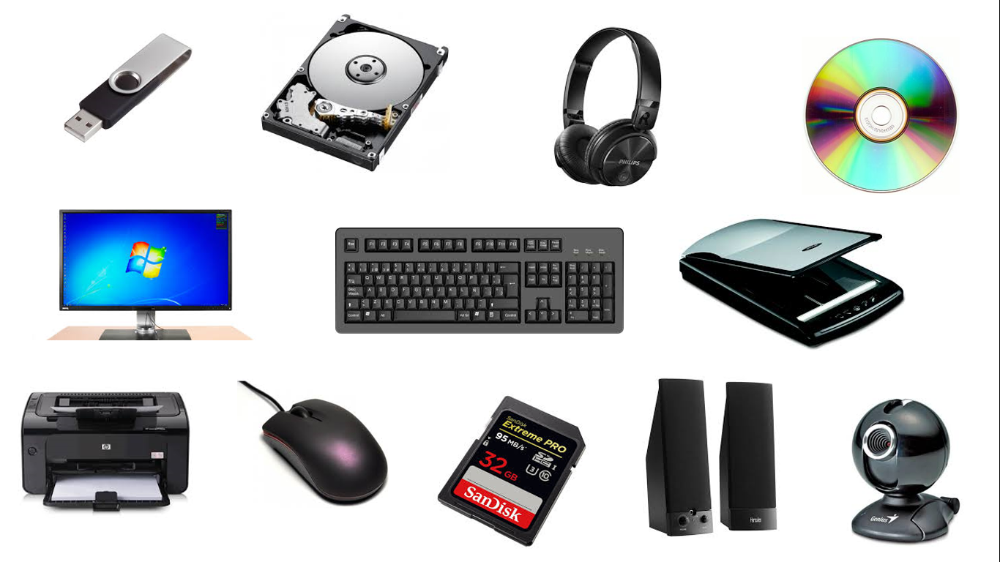

Dispositivos de Entrada

Dispositivo funcional para moverse por la pantalla de la computadora.
Pantalla diseñada para reconocer la presión en la superficie. Al tocar la pantalla, el usuario puede hacer una selección o mover el cursor, equivalente al mouse.
Dispositivo que, con un haz luminoso, detecta los patrones de luz y oscuridad y permite convertir una imagen física en una señal digital que la reproduce tal cual es.
Se conecta a la computadora y le transmite las imágenes que capta. Puede ser de fotos o de video.
Por medio del láser se puede leer dibujos formados por barras y espacios paralelos, codificando así información.